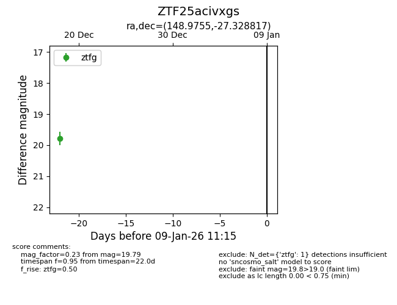
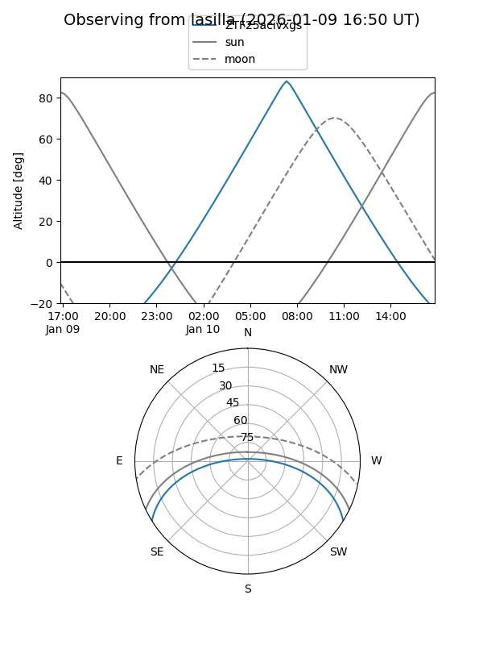
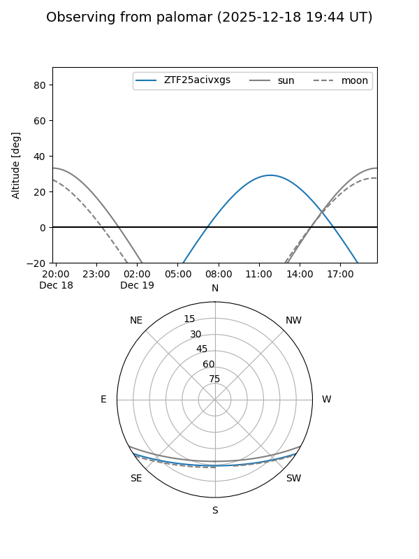

ZTF25acivxgs
Target ZTF25acivxgs at 2025-12-31 16:59
Aliases and brokers:
FINK:
Lasair:
ALeRCE:
alt names
ZTF25acivxgs (ztf,fink_ztf)
Coordinates:
equatorial (ra, dec) = 148.9755,-27.32882
equatorial (HMS+DMS) = 09:55:54.12,-27:19:43.74
galactic (l, b) = (261.6146,+21.13207)
Flags:
Photometry:
last ztfg=19.79
1 ztfg detections
Lightcurve

Visibility


Additional plots